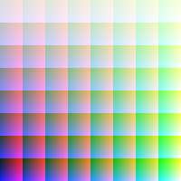

Abstract
ZPNG is a Common Lisp library for creating PNG files. It uses Salza2 for compression. The latest version is 1.2.2, released on March 12th, 2015.
Download shortcut:
ZPNG provides three interfaces creating PNG files. The first is through a PNG object, which holds all image sample data and which may be written out to a file all at once. The second is through a STREAMED-PNG object, which writes a single output row of the image at a time. By working with only a single row at a time, images that are too big to fit in memory may still be written out incrementally as a PNG file. The third is through a PIXEL-STREAMED-PNG object which allows you to write a single pixel at a time. It still buffers a whole row at a time, but it manages all of the buffer handling for you.
The PNG file format has many options, and ZPNG supports only a subset of them.
(defun draw-mandelbrot (file)
(let* ((png (make-instance 'png
:color-type :grayscale-alpha
:width 200
:height 200))
(image (data-array png))
(max 255))
(dotimes (y 200 (write-png png file))
(dotimes (x 200)
(let ((c (complex (- (/ x 100.0) 1.5) (- (/ y 100.0) 1.0)))
(z (complex 0.0 0.0))
(iteration 0))
(loop
(setf z (+ (* z z) c))
(incf iteration)
(cond ((< 4 (abs z))
(setf (aref image y x 1) iteration)
(return))
((= iteration max)
(setf (aref image y x 1) 255)
(return)))))))))
(defun draw-rgb (file) (let ((png (make-instance 'pixel-streamed-png :color-type :truecolor-alpha :width 200 :height 200))) (with-open-file (stream file :direction :output :if-exists :supersede :if-does-not-exist :create :element-type '(unsigned-byte 8)) (start-png png stream) (loop for a from 38 to 255 by 31 do (loop for b from 10 to 255 by 10 do (loop for g from 38 to 255 by 31 do (loop for r from 10 to 255 by 10 do (write-pixel (list r g b a) png))))) (finish-png png))))
The following symbols are exported from the ZPNG package.
[Function]
samples-per-pixel png => samples
Returns the number of octet samples that make up a single pixel.
Image Color Type Samples per Pixel Grayscale 1 Truecolor 3 Grayscale with Alpha 2 Truecolor with Alpha 4
[Functions]
width png => width
height png => height
Returns the width or height of png.
[Function]
rowstride png => rowstride
Returns the number of samples in a single row of png. It is equivalent to (* (width png) (samples-per-pixel png)).
[Function]
color-type png => color-type
Returns the color type of png, one of of :grayscale, :truecolor, :grayscale-alpha, or :truecolor-alpha.
[Class]
png
Instances of this class may be created directly. Supported initargs:
- :width - required, the width of the image
- :height - required, the height of the image
- :color-type - optional, the color type of the image, one of :grayscale, :truecolor (the default), :grayscale-alpha, or :truecolor-alpha
- :image-data - optional, the sample data of the image. If specified, this must be an octet vector with a length of width × height × samples-per-pixel. If not specified, an image data vector of the appropriate size will be created automatically.
[Function]
image-data png => octet-vector
Returns the image data of png. Samples are laid out from left to right, top to bottom, so the first samples of data affect the upper-left of the image and the final samples affect the lower-right.
Image Color Type Pixel Sample Layout Grayscale S|S|S... Truecolor RGB|RGB|RGB... Grayscale with Alpha SA|SA|SA... Truecolor with Alpha RGBA|RGBA|RGBA... Layout of the samples into pixels is done according to the image's color type and is fully documented in the Portable Network Graphics Specification.
[Function]
data-array png => data-array
Returns a multidimensional array representing the pixels of png. The dimensions correspond to the height, width, and pixel components, respectively. For example, to access the red component at <53,100> of a truecolor PNG, you could use this:(aref (data-array png) 100 53 0)Note the reversed order of the coordinate arguments; this is a consequence of Common Lisp's row-major ordering of elements in a multidimensional array and PNG's specified sample layout.
[Function]
copy-png png => png-copy
Create a copy of png.
[Function]
png= png1 png2 => boolean
Returns true if png1 and png2 are equal. Equality is defined as having the same dimensions, color type, and image data.
[Function]
write-png png file
&key (if-exists :supersede) => pathname
Writes png to file and returns the truename of file. if-exists is passed to the underlying CL:OPEN call for opening the output file.
[Function]
write-png-stream png stream => |
Writes png to stream, which should be an output stream that can accept octets.
[Class]
streamed-png
Instances of this class may be created directly. Supports all the initargs of the PNG class except :IMAGE-DATA.In contrast to PNG instances, STREAMED-PNG instances do not keep all the image data in one large vector. Instead, instances are used to write out the image data of a PNG file one row at a time. The protocol for incrementally writing out via a STREAMED-PNG involves these generic functions:
[Function]
row-data streamed-png => octet-vector
Returns a vector suitable for passing to WRITE-ROW for streamed-png; it has the appropriate number of entries for the image width and color type of the png. The initial contents are all zeroes. For a given streamed png, each call to row-data will return the same vector, not a fresh one.
[Function]
start-png png stream => png
Writes PNG file header data to stream, which must be an output stream that supports writing (unsigned-byte 8) data. The header data is taken from png, which must be a STREAMED-PNG instance.
[Function]
write-row row png
&key (start 0) end => |
Writes row to the output stream of png. row must be an (unsigned-byte 8) vector with the appropriate number of entries for png. start defaults to 0 and end defaults to start + ROWSTRIDE. The difference between end and start should be equal to (rowstride png). png must be a STREAMED-PNG instance.If the row length, as defined by start and end, is not the right size, an error of type INVALID-ROW-LENGTH is signaled.
If writing row would exceed the number of rows in the image (as defined by HEIGHT), an error of type TOO-MANY-ROWS is signaled.
[Function]
rows-written streamed-png => count
Returns the number of rows written to streamed-png so far.
[Function]
rows-left streamed-png => count
Returns the number of rows left to write to streamed-png. Equivalent to (- (height png) (rows-written png)).
[Function]
finish-png streamed-png => |
Concludes writing PNG file data to the output stream of streamed-png. The internal state of streamed-png is reset in such a way that it can be re-used to write another PNG file, with the same dimensions and color type parameters, using another START-PNG/WRITE-ROW/FINISH-PNG sequence.This function must be called only after exactly HEIGHT rows have been written to streamed-png via WRITE-ROW. If too few rows have been written to streamed-png, an error of type INSUFFICIENT-ROWS is signaled.
[Class]
pixel-streamed-png
Instances of this class may be created directly. Supports all the initargs of the STREAMED-PNG class.The PIXEL-STREAMED-PNG class extends the STREAMED-PNG class. Rather than preparing a row of pixels and caling the WRITE-ROW method, with PIXEL-STREAMED-PNG instances, you write a single pixel at a time with the WRITE-PIXEL method. The protocol for incrementally writing out via a PIXEL-STREAMED-PNG involves these generic functions:
[Function]
write-pixel pixel-samples pixel-streamed-png
Writes the samples for a single pixel from the sequence pixel-samples to the next available spot in the ROW-DATA buffer. When the buffer is full, this method invokes the WRITE-ROW method. The length of the PIXEL-SAMPLES sequence must be equal to the SAMPLES-PER-PIXEL.
[Function]
pixels-left-in-row pixel-streamed-png
Returns the number of pixels left to write to complete the current row of pixels.
[Condition]
zpng-error
All errors signaled by ZPNG are a subtype of ZPNG-ERROR, which is a subtype of CL:ERROR.
[Condition]
invalid-size
A condition of this type is signaled when a PNG with invalid size is created. Valid PNGs have positive width and height.
[Accessors]
invalid-size-width condition => width
invalid-size-height condition => height
These accessors provide the invalid size used for a PNG.
[Condition]
invalid-row-length
A condition of this type is signaled when a row with an incorrect size is passed to WRITE-ROW.
[Condition]
insufficient-rows
A condition of this type is signaled from FINISH-PNG when it is called before enough rows have been written via WRITE-ROW.
[Condition]
incomplete-row
A condition of this type is signaled from FINISH-PNG when it is called on a PIXEL-STREAMED-PNG before the current row of pixels has been completed.
[Condition]
too-many-rows
A condition of this type is signaled from WRITE-ROW if it is called more times than is necessary for the given PNG.
[Condition]
color-type-mismatch
A condition of this type is signaled from WRITE-PIXEL if the number of samples in the pixel is not the expected SAMPLES-PER-PIXEL for the given PNG.
Thanks to Patrick Stein for implementing pixel-at-a-time streamed
output.
Feedback
Please direct any questions, comments, bug reports, or other feedback to Zach Beane.